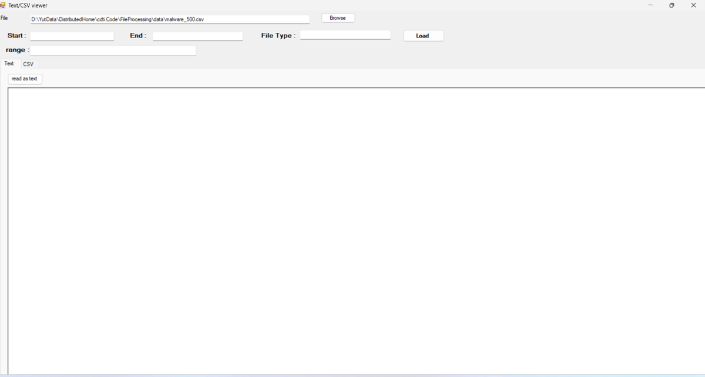

HW04: FileProcessing + MalwareBazaar Dataset + Test Case

รายละเอียด
พัฒนาโปรแกรม Text/CSV Viewer สำหรับอ่านและประมวลผลไฟล์ข้อมูลขนาดใหญ่จาก MalwareBazaar Dataset (ประมาณ 1 ล้านรายการ) รองรับการกำหนดช่วงข้อมูลที่ต้องการโหลด พร้อมจัดทำ Test Case และ Test Report
สิ่งที่ได้เรียนรู้
ได้ฝึกจัดการไฟล์ข้อมูลขนาดใหญ่อย่างมีประสิทธิภาพ และฝึกกระบวนการทดสอบซอฟต์แวร์อย่างเป็นระบบด้วย Test Case / Test Report